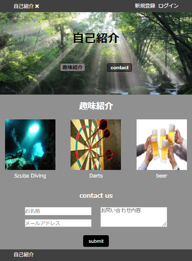
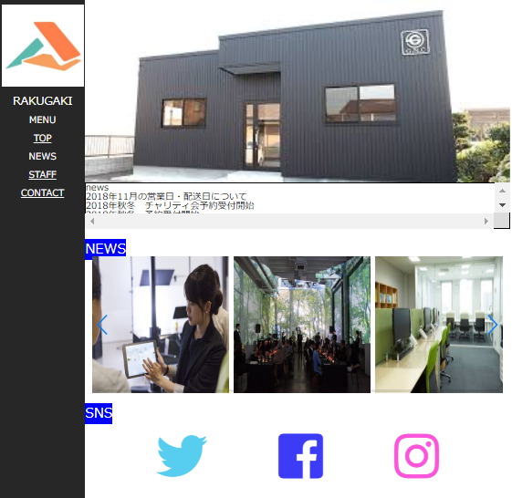
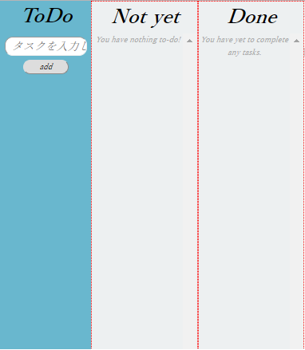
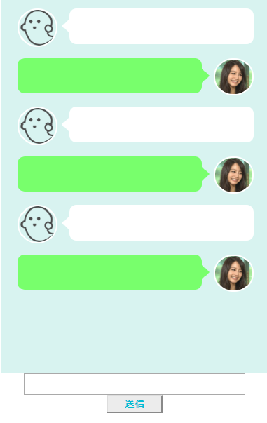
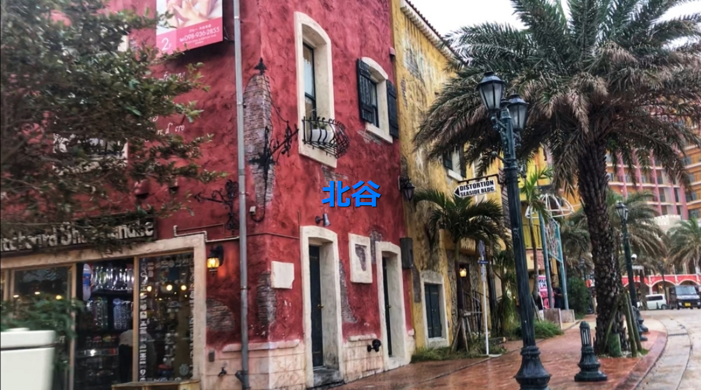

自己紹介
自己紹介サイトです。htmlとcssを利用して作成しています。

会社ホームページ
会社のホームページをイメージして作成しました。htmlとcss、jsを使用しています。jsはスライダーに使用しました。

ToDo
このサイトはToDoリストを管理するサイトです。記入した予定を削除jやdoneへの移動をできるようにしています。html,css,jsを使用しています。

talk-api
talk-apiを使用し架空の人物とお話ができるサイトを作りました。html,css,js,apiを使用しています。

北谷町紹介サイト
北谷町を紹介するためのサイトです。Topページの画像をスライダーで動かせるようにしています。